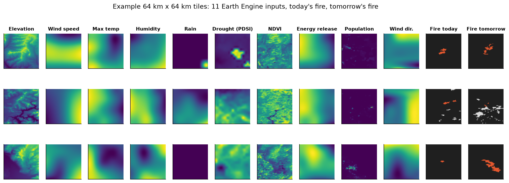
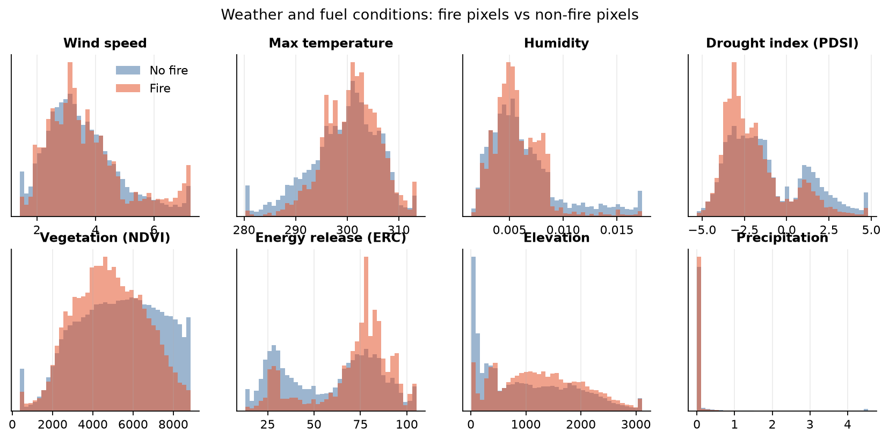
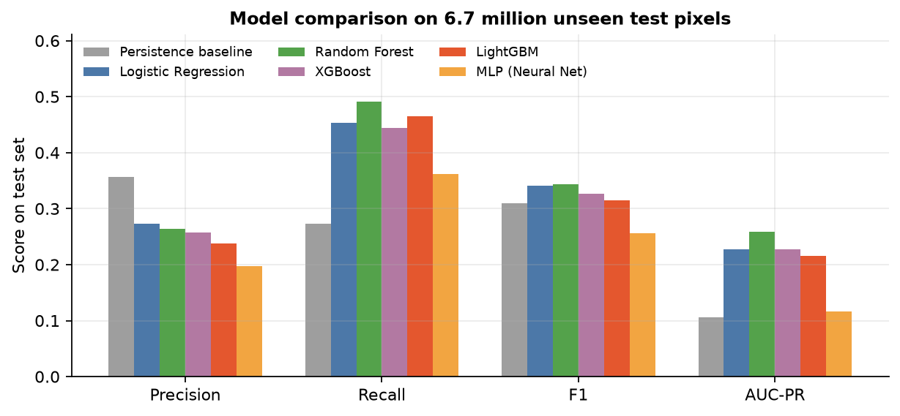
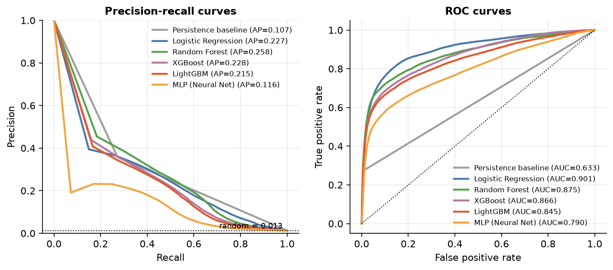
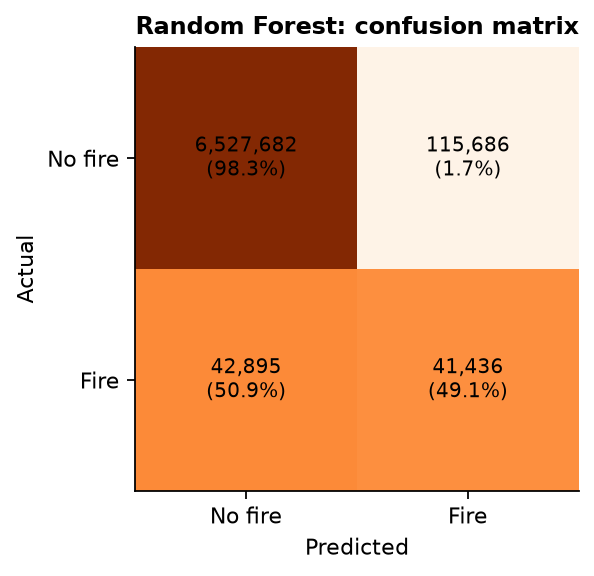
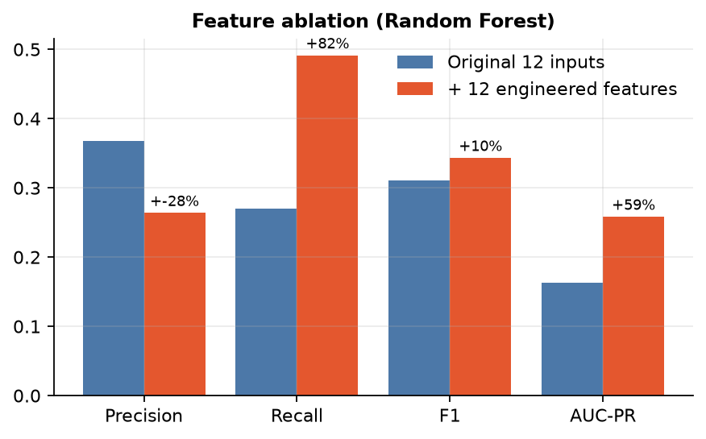
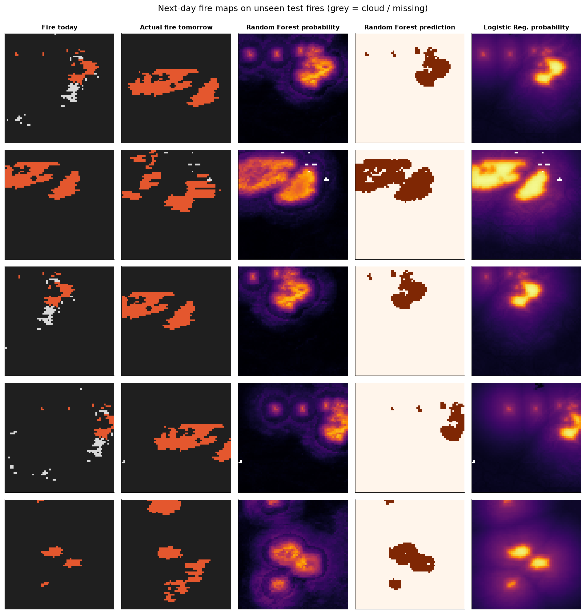

Abstract—Satellites show where a wildfire burns today, but responders need to know where it will burn tomorrow. We study next-day wildfire spread on the Next Day Wildfire Spread dataset, 18,545 fire events across the United States (2012–2020) whose 11 environmental input layers were assembled in Google Earth Engine. We recast the task from image segmentation to pixel classification and add 12 spatial and physics-informed features, including fire density at three scales, distance to the nearest active fire, and the fire density sampled upwind of each pixel using the local wind direction. Five models (logistic regression, random forest, XGBoost, LightGBM and a multilayer perceptron) are tuned with fire-grouped cross-validation and evaluated against a persistence baseline on 6.7 million unseen test pixels at the true fire rate of 1.25%. The tuned random forest reaches an F1 of 0.343 and an area under the precision-recall curve (AUC-PR) of 0.258, against 0.107 for persistence and 0.225 reported for the random forest of the original study. An ablation shows the engineered features raise AUC-PR by 58% (0.163 to 0.258). SHAP analysis identifies distance to the fire front and local fire density as the dominant drivers. Finally, we build a digital twin that re-runs the model under changed wind and climate-warming scenarios; it predicts a 7.5% larger area at risk under +2 °C and 20.4% under +4 °C. We release the code, a reproducible Earth Engine export script that also works outside the US (e.g., Pakistan), and an interactive web demo.
Index Terms—Wildfire spread, remote sensing, Google Earth Engine, machine learning, feature engineering, SHAP, digital twin, climate change.
I. Introduction
Wildfire activity has grown in extent and severity in many regions, and attribution studies link a large part of this growth to a warmer, drier climate [1], [2]. Operational products such as the MODIS active-fire detections [3] map where fires are burning on a given day, but resource planning, evacuation and fire-break placement depend on where a fire will be on the next day. Physical spread models such as Rothermel's [4] need detailed fuel inputs that are rarely available at scale, which motivates data-driven alternatives [5].
Huot et al. [6] released the Next Day Wildfire Spread (NDWS) dataset, built with Google Earth Engine (GEE) [7], and framed the problem as image segmentation. Their convolutional autoencoder achieved an AUC-PR of 28.4%, only modestly above a random forest (22.5%) and logistic regression (19.8%) that saw each pixel with its eight neighbors. This small gap suggests that what matters most is spatial context and fire physics, which per-pixel models largely lack, rather than model capacity.
Research problem. Given today's active-fire mask and 11 environmental layers for a 64 km × 64 km area at 1 km resolution, predict which pixels will burn the next day. Objectives: (i) build a clean, leakage-aware pixel dataset; (ii) design features that encode fire proximity and wind-driven spread; (iii) compare at least four tuned machine learning models fairly on the true class balance; (iv) explain the learned drivers; and (v) use the model as a digital twin for wind and warming scenarios.
Contributions. (1) Twelve spatial and physics-informed features, including a novel upwind fire feature, that raise AUC-PR by 58% in ablation. (2) A comparison of five models plus a persistence baseline, with fire-grouped tuning and threshold selection on a separate split. (3) SHAP-based interpretation. (4) An interactive digital twin with climate scenarios. (5) A GEE script that rebuilds the inputs for any region, including Pakistan.
II. Related Work
Machine learning has been applied to fire occurrence, susceptibility, burned-area mapping and spread [5]. For spread, NDWS [6] provides daily snapshots of fire masks with weather, terrain, vegetation and population layers. WildfireSpreadTS [8] extends this idea to multi-day time series and finds that additional temporal context helps deep models. Gradient-boosted trees [9], [10] and random forests [11] are strong baselines for tabular remote-sensing data, and SHAP [12] is widely used to explain them. Digital twins, virtual replicas that are run under what-if scenarios [13], are increasingly proposed for environmental hazards. Our work differs from [6] by keeping fast tabular models and moving the spatial reasoning into explicit, physically motivated features, and by using the trained model for scenario simulation.
III. Dataset
NDWS [6] contains 18,545 fire events over the contiguous United States from 2012 to 2020. Each sample is a 64 × 64 grid at 1 km resolution with today's fire mask, tomorrow's fire mask (the target) and 11 inputs, all exported from GEE: elevation (SRTM), wind direction and speed, minimum and maximum temperature, specific humidity and precipitation (GRIDMET [14]), the Palmer Drought Severity Index (PDSI) and energy release component (ERC, a fuel-dryness index), NDVI (VIIRS) and population density (GPWv4). Fire masks come from MODIS MOD14A1 [3]. The authors split the data by week into train, evaluation and test sets in an 8:1:1 ratio [6], yielding 14,979, 1,877 and 1,689 tiles. We use the public zarr copy of the data hosted on Hugging Face, which contains the same arrays.
Labels take three values: fire (1), no fire (0) and missing (−1, mostly cloud or smoke). Table I summarizes each split. Fire is rare: about one pixel in 90 burns the next day, which makes accuracy a misleading metric.
| Split | Tiles | Pixels | Fire % | Missing % |
|---|---|---|---|---|
| Train | 14,979 | 61.35 M | 1.07 | 2.35 |
| Eval | 1,877 | 7.69 M | 1.33 | 2.44 |
| Test | 1,689 | 6.92 M | 1.22 | 2.75 |
IV. Methodology

A. Preprocessing
Missing values. Pixels whose next-day label is missing are removed from training and evaluation, as in [6]. A missing value in today's fire mask is treated as "no fire". The input layers contain no NaN values, but the pipeline median-imputes any that appear. Outliers. Each layer is clipped to a physically plausible range (e.g., ERC to [0, 110], wind speed to [0, 12] m/s), which removes interpolation artifacts such as negative precipitation. Standardization. Logistic regression and the MLP use z-score standardization inside a scikit-learn pipeline [15], fitted on training data only; tree models use raw values.
B. Feature Engineering
Each pixel becomes one row with the 11 inputs, today's fire flag, and 12 engineered features:
- Fire density at 3, 7 and 15 km: the fraction of burning pixels in a square window (a box filter on today's mask).
- Distance to fire: Euclidean distance transform to the nearest burning pixel, capped at 32 km.
- Upwind fire at 2 and 5 km: the 7 km fire density sampled at the point k km upwind, i.e., at row r − k cos θ, column c + k sin θ, where θ is the pixel's meteorological wind direction (the direction the wind comes from). A pixel downwind of a fire gets a high value.
- Wind vector u = −vs sin θ, v = −vs cos θ, which removes the 0/360° discontinuity.
- Temperature range (max − min), terrain slope from the elevation gradient, fuel dryness = NDVI × ERC (fuel amount times dryness), and wind toward fire front = wind speed × upwind fire.
The feature code is covered by unit tests, for example that a pixel 5 km south of a fire sees it as upwind under a north wind, while a pixel north of it does not.
C. Sampling and Class Imbalance
Using all 61 million training pixels is unnecessary and dominated by easy negatives. We keep every training fire pixel and draw three non-fire pixels per fire pixel: half within 8 km of an active fire (hard negatives) and half at random. This gives 2.63 million rows with a 25% fire rate. Because the training rate differs from the real rate, the decision threshold of each model is chosen to maximize F1 on the full, unbalanced evaluation split (7.5 million pixels). All reported metrics use the full test split (6.73 million pixels, 1.25% fire).
D. Models and Hyper-parameter Tuning
We compare logistic regression (LR), random forest (RF) [11], XGBoost [9], LightGBM [10] and a multilayer perceptron (MLP), plus a persistence baseline that predicts tomorrow's fire equals today's. Each model is tuned with randomized search (8–12 configurations; 6 for the MLP) on a 200,000-row subsample using three-fold GroupKFold grouped by tile, so that pixels of one fire never appear in both training and validation folds. The search maximizes average precision. The best configuration is refit on 1.5 million rows. Table II lists the selected hyper-parameters.
| Model | Best configuration |
|---|---|
| LR | C = 0.985, no class weights |
| RF | 157 trees, depth 23, min leaf 37, sqrt features |
| XGBoost | 391 trees, depth 9, lr 0.124, colsample 0.53 |
| LightGBM | 585 trees, 206 leaves, lr 0.164, λ 9.3 |
| MLP | 128-64-32, α 1.3e-4, lr 1.6e-3, batch 512 |
E. Evaluation Metrics
We report accuracy, precision, recall, F1 and ROC-AUC, and use AUC-PR (average precision) as the primary metric because it is informative under heavy class imbalance [16]. A random classifier has an AUC-PR equal to the fire rate (0.0125).
F. Explainability and Digital Twin
We compute SHAP values [12] with TreeExplainer on 4,000 test pixels. For the digital twin we take four distinct, growing test fires, modify the raw inputs (rotate the wind in 45° steps, scale wind speed by 0.5–2×, or apply a warming scenario), recompute every engineered feature and predict again. The +2 °C and +4 °C scenarios add the temperature change to both temperature layers, add 2 ERC units per degree, reduce specific humidity by 3% per degree and lower PDSI by 0.25 per degree. These perturbations are illustrative sensitivity tests, not climate projections.
V. Exploratory Data Analysis

Fig. 2 shows the three strongest patterns. The chance that a pixel burns tomorrow drops from 78% on today's fire to about 15% at 5 km. The second rise near 9–12 km reflects other fires in the same tile. Among pixels 1–4 km from a fire, those with fire upwind burn about 1.3 to 1.9 times as often as those without, in every wind class. Burn rate also rises with ERC, from about 21% for moist fuel to over 55% for very dry fuel. Distributions of the weather inputs overlap strongly between fire and non-fire pixels (Fig. 3), so weather alone separates the classes poorly. Spearman correlations with the target are highest for 7 km fire density (0.51), 3 km fire density (0.49), upwind fire at 2 km (0.48) and wind toward the fire front (0.47), all engineered features, compared with 0.38 for today's raw fire flag.

During EDA we also found that the dataset contains overlapping crops of the same large fire: of 1,689 test tiles only 1,648 are exact-unique, and further tiles differ only by a spatial shift. This matters for validation design (Section VII).
VI. Results
| Model | Accuracy | Precision | Recall | F1 | AUC-PR | ROC-AUC | CV AUC-PR | Threshold | Train time (s) |
|---|---|---|---|---|---|---|---|---|---|
| Persistence baseline | 0.985 | 0.357 | 0.273 | 0.309 | 0.107 | 0.633 | – | 0.5 | 0 |
| Logistic Regression | 0.978 | 0.272 | 0.453 | 0.340 | 0.227 | 0.901 | 0.640 | 0.443 | 15 |
| Random Forest | 0.976 | 0.264 | 0.491 | 0.343 | 0.258 | 0.875 | 0.745 | 0.459 | 618 |
| XGBoost | 0.977 | 0.258 | 0.445 | 0.326 | 0.228 | 0.866 | 0.831 | 0.416 | 157 |
| LightGBM | 0.975 | 0.237 | 0.465 | 0.314 | 0.215 | 0.845 | 0.848 | 0.327 | 959 |
| MLP (Neural Net) | 0.974 | 0.198 | 0.362 | 0.256 | 0.116 | 0.790 | 0.742 | 0.568 | 259 |
Table III and Fig. 4 compare all models. Every learned model except the MLP roughly doubles the persistence AUC-PR. Random forest is best on AUC-PR (0.258), F1 (0.343) and recall (0.491). It finds 41,436 of the 84,331 fire pixels while raising 115,686 false alarms out of 6.64 million non-fire pixels (Fig. 5). Logistic regression is a close second on F1 (0.340) and best on ROC-AUC (0.901), while training 40 times faster. Accuracy is above 0.97 for every model and highest for persistence, which shows why it cannot rank models here.



Comparison with the original study. Huot et al. [6] report AUC-PR of 11.5% (persistence), 19.8% (LR), 22.5% (RF) and 28.4% (convolutional autoencoder). Our persistence baseline reproduces their precision (35.7%) and recall (27.3%) exactly, which supports that the two evaluations are comparable, although they score random 32 km crops and we score full tiles. With the engineered features, our LR improves from 19.8% to 22.7% and our RF from 22.5% to 25.8%. This closes most of the gap to their deep model without a GPU: our full pipeline trains on a laptop CPU.
Ablation. Retraining the tuned random forest on only the original 12 inputs gives AUC-PR 0.163 and F1 0.311 (Fig. 6). The engineered features raise AUC-PR by 58% and F1 by 10%, and shift the operating point toward recall (0.270 to 0.491), which matters more than precision when missing a fire is costlier than a false alarm.

Explainability. SHAP (Fig. 7) ranks distance to fire far above every other feature (mean |SHAP| 0.87), followed by 7 km and 3 km fire density (0.21, 0.18). Next come elevation, ERC, NDVI, population and humidity, each between 0.14 and 0.17. The top three drivers are all engineered features. Fire is predicted to spread mainly around the current front, and is modulated by terrain, fuel dryness and vegetation. The upwind features rank lower in SHAP than in correlation because much of their information is shared with the density features.


VII. Discussion
Why do boosted trees and the MLP fall behind? XGBoost and LightGBM have the highest cross-validation AUC-PR (0.83, 0.85) but lower test scores than RF and even LR. Two causes interact. First, the CV score is computed on the balanced sample (25% fire), so its level is not comparable with the test score (1.25% fire). Second, and more important, the gap between CV and test varies by model: grouping by tile does not stop overlapping crops of the same fire, or neighbouring days of one fire, from falling into different folds. Flexible models that memorize fire-specific patterns are therefore rewarded in CV but generalize worse to fires from unseen weeks. RF's averaging and LR's simplicity are more robust to this. Grouping by fire event and week would be a better validation design. The MLP stopped early after at most 60 epochs with convergence warnings. Its weak result reflects a limited training budget on a CPU, not a ceiling for neural networks; the autoencoder in [6], trained for 1,000 epochs on GPUs, remains the strongest model.
Precision–recall trade-off. At F1-optimal thresholds the random forest flags about 2.8 non-fire pixels per correct fire pixel. In practice the threshold can be tuned to the user: a lower one for evacuation planning (high recall) and a higher one for allocating scarce crews (high precision). The precision-recall curves (Fig. 5a) make this choice explicit.
VIII. Digital Twin: Wind and Climate Scenarios
A digital twin needs a model that responds sensibly when inputs move outside the observed range. Our first version multiplied ERC by up to 1.25. Under that change XGBoost and LightGBM predicted less fire under warming (e.g., LightGBM 213 to 49 km2), because tree ensembles cannot extrapolate and the scaled inputs left the training range. We therefore (i) use small additive changes that stay inside the training range, and (ii) drive the twin with logistic regression. LR is monotone in each input, and its test AUC-PR (0.227) is on par with XGBoost (0.228).
| Fire | Real | Wind ×2 | Wind rotated | +2 °C | +4 °C |
|---|---|---|---|---|---|
| A | 248 | 243 | 242–283 | 261 | 290 |
| B | 168 | 171 | 166–198 | 181 | 205 |
| C | 244 | 229 | 239–279 | 256 | 282 |
| D | 301 | 1,082 | 253–355 | 335 | 380 |
| Mean | 240 | 431 | – | 258 (+7.5%) | 289 (+20.4%) |
Table IV shows that warming raises the predicted area at risk for every fire, by 7.5% on average at +2 °C and 20.4% at +4 °C. Rotating the wind moves risk toward the downwind side and changes the area by up to 18%. Doubling the wind speed has little effect on three fires but more than triples the area at risk for fire D, which already sat in strong wind next to dry fuel. This non-linear response is what makes scenario testing useful. Fig. 9 shows the climate scenarios for fire A, and the interactive version on the project website lets users change wind and warming on all four fires.

IX. Application Beyond the Training Region
The repository includes a GEE script that rebuilds the 12 model inputs for any location and date. Inside the US it uses the original sources. Elsewhere it replaces GRIDMET with ERA5-Land [17] and TerraClimate [18], derives wind direction and specific humidity from ERA5-Land variables, and approximates ERC from temperature, humidity and drought. The example is set to the Margalla Hills near Islamabad, Pakistan, where forest fires recur in the dry season. Applying the US-trained model there would need local validation against MODIS/VIIRS detections, because fuels and climate differ. We list this as future work.
X. Limitations
- Labels come from 1 km MODIS detections taken once a day, which miss small fires and include cloud gaps.
- Only one day of history is used. Multi-day inputs [8] would capture fire momentum.
- Validation groups by tile but not by fire event or week, which inflates CV for flexible models (Section VII).
- Digital-twin scenarios are sensitivity tests with a linear model, not physically coupled climate projections.
XI. Conclusion
Next-day wildfire spread is a heavily imbalanced, spatial problem. By turning the task into pixel classification with explicit spatial and physics-informed features, a tuned random forest reaches AUC-PR 0.258 and F1 0.343 on 6.7 million unseen pixels. This improves on the persistence baseline by 141% and on the original study's random forest, using only a laptop CPU. The features alone add 58% AUC-PR. SHAP confirms that proximity to the fire front dominates, with fuel dryness, terrain and vegetation as secondary drivers. A digital twin built on the trained model makes the results actionable: it shows how wind and warming would change tomorrow's risk. Future work will add multi-day history, validate by fire event, and test the GEE pipeline on fires in Pakistan.
Code and Data Availability
All code (Jupyter notebook and Python modules), results, figures and the GEE script are at GITHUB_URL. The dataset is available from Kaggle (fantineh/next-day-wildfire-spread) and Hugging Face (TheRootOf3/next-day-wildfire-spread). The manuscript was organized following the PaperOrchestra workflow [19] (idea and experiment log in paper/raw_materials).
References
- J. T. Abatzoglou and A. P. Williams, “Impact of anthropogenic climate change on wildfire across western US forests,” Proc. Nat. Acad. Sci., vol. 113, no. 42, pp. 11770–11775, 2016.
- M. W. Jones et al., “Global and regional trends and drivers of fire under climate change,” Rev. Geophys., vol. 60, no. 3, Art. no. e2020RG000726, 2022.
- L. Giglio, W. Schroeder, and C. O. Justice, “The collection 6 MODIS active fire detection algorithm and fire products,” Remote Sens. Environ., vol. 178, pp. 31–41, 2016.
- R. C. Rothermel, “A mathematical model for predicting fire spread in wildland fuels,” USDA Forest Service, Ogden, UT, USA, Res. Pap. INT-115, 1972.
- P. Jain, S. C. P. Coogan, S. G. Subramanian, M. Crowley, S. Taylor, and M. D. Flannigan, “A review of machine learning applications in wildfire science and management,” Environ. Rev., vol. 28, no. 4, pp. 478–505, 2020.
- F. Huot, R. L. Hu, N. Goyal, T. Sankar, M. Ihme, and Y.-F. Chen, “Next day wildfire spread: A machine learning dataset to predict wildfire spreading from remote-sensing data,” IEEE Trans. Geosci. Remote Sens., vol. 60, 2022, doi: 10.1109/TGRS.2022.3192974.
- N. Gorelick, M. Hancher, M. Dixon, S. Ilyushchenko, D. Thau, and R. Moore, “Google Earth Engine: Planetary-scale geospatial analysis for everyone,” Remote Sens. Environ., vol. 202, pp. 18–27, 2017.
- S. Gerard, Y. Zhao, and J. Sullivan, “WildfireSpreadTS: A dataset of multi-modal time series for wildfire spread prediction,” in Proc. Adv. Neural Inf. Process. Syst. (NeurIPS) Datasets and Benchmarks Track, 2023.
- T. Chen and C. Guestrin, “XGBoost: A scalable tree boosting system,” in Proc. 22nd ACM SIGKDD Int. Conf. Knowl. Discov. Data Min., 2016, pp. 785–794.
- G. Ke et al., “LightGBM: A highly efficient gradient boosting decision tree,” in Proc. Adv. Neural Inf. Process. Syst., vol. 30, 2017, pp. 3146–3154.
- L. Breiman, “Random forests,” Mach. Learn., vol. 45, no. 1, pp. 5–32, 2001.
- S. M. Lundberg and S.-I. Lee, “A unified approach to interpreting model predictions,” in Proc. Adv. Neural Inf. Process. Syst., vol. 30, 2017, pp. 4765–4774.
- F. Tao, H. Zhang, A. Liu, and A. Y. C. Nee, “Digital twin in industry: State-of-the-art,” IEEE Trans. Ind. Informat., vol. 15, no. 4, pp. 2405–2415, 2019.
- J. T. Abatzoglou, “Development of gridded surface meteorological data for ecological applications and modelling,” Int. J. Climatol., vol. 33, no. 1, pp. 121–131, 2013.
- F. Pedregosa et al., “Scikit-learn: Machine learning in Python,” J. Mach. Learn. Res., vol. 12, pp. 2825–2830, 2011.
- T. Saito and M. Rehmsmeier, “The precision-recall plot is more informative than the ROC plot when evaluating binary classifiers on imbalanced datasets,” PLoS ONE, vol. 10, no. 3, Art. no. e0118432, 2015.
- J. Muñoz-Sabater et al., “ERA5-Land: A state-of-the-art global reanalysis dataset for land applications,” Earth Syst. Sci. Data, vol. 13, no. 9, pp. 4349–4383, 2021.
- J. T. Abatzoglou, S. Z. Dobrowski, S. A. Parks, and K. C. Hegewisch, “TerraClimate, a high-resolution global dataset of monthly climate and climatic water balance from 1958–2015,” Sci. Data, vol. 5, Art. no. 170191, 2018.
- Y. Song, Y. Song, T. Pfister, and J. Yoon, “PaperOrchestra: A multi-agent framework for automated AI research paper writing,” arXiv:2604.05018, 2026.